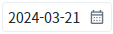
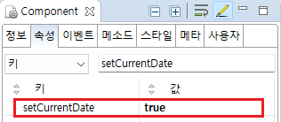

InputCalendar에 오늘 날짜를 할당(출력)하는 예제입니다.
오늘 날짜 출력하기 - 속성
오늘 날짜 출력하기 - 스크립트
예제 영역 '오늘 날짜 출력하기 - 속성'에서 테스트합니다.1
실행 결과를 확인합니다.
InputCalendar에 출력된 'value'를 확인합니다. 예제 파일이 실행된 날짜(오늘 날짜)가 출력되는 것을 확인할 수 있습니다.
Image 1.브라우저(Chrome) 실행 예시

예제 영역 '오늘 날짜 출력하기 - 스크립트'에서 테스트합니다.1
STEP 1: 스크립트 실행하기
버튼 '오늘 날짜 할당'을 클릭합니다.
2
STEP 2: 실행 결과를 확인합니다.
InputCalendar에 오늘 날짜(예제 파일이 실행된 날짜)가 'value'로 할당된 것을 확인합니다.
Image 2.브라우저(Chrome) 실행 예시
1
속성을 설정합니다.
[필수] setCurrentDate="true"
날짜 input 현재일을 출력
Image 3.웹스퀘어 스튜디오의 Component View - 속성 설정 예시

Example 1.Source
<!-- inputCalendar 의 소스 본문 예시 --> <w2:inputCalendar setCurrentDate="true" calendarValueType="yearMonthDate" id="ica_exam_1"> </w2:inputCalendar>
'$p.getCurrentServerDate' 메소드와 InputCalenar의 'setValue' 메소드를 사용하여 스크립트를 작성합니다.
Example 2.Script
//예제 파일의 스크립트 "scwin.btn_ex1_onclick"를 참고하세요. //오늘 날짜 반환 받기 - InputCalenar에 설정된 ioFormat과 동일해야 합니다. var strDate = $p.getCurrentServerDate("yyyyMMdd"); //InputCalenar [ica_exam_2]에 'value' 할당하기 ica_exam_2.setValue(strDate);
setCurrentDate
ioFormat
setValue( value )
$p.getCurrentServerDate( pattern )